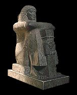

|
When Mehetra was not busy, she liked to watch other people go about their duties in the temple.

There was one priest in particular who Mehetra liked to follow. His name was Amenemopet. Amenemopet was the 'Wenuty' ('hour-watcher') priest. He was in charge of making sure that temple rituals were performed on time during the day, night and throughout the year.
Next...
|